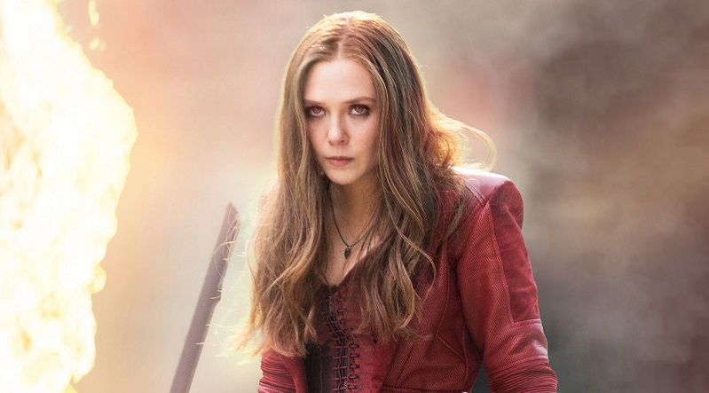

Scarlet Witch adalah salah satu karakter fiksi yang ada pada komik marvel. Tokoh mutan wanita ini diciptakan oleh Stan Lee dan Jack Kirby. Scarlet Witch pertama kali muncul pada komik The X-Men vol 4 yang diterbitkan Marvel pada bulan Maret tahun 1964. Scarlet Wich merupakan saudari Quick Silver yang juga merupakan mutan. .
Scarlet Witch lahir dari seorang wanita bernama Magda dan seorang mutan yang memiliki kekuatan mengendalikan medan magnet (Kemungkinan besar Magento) yang bernama Magnus. Kala itu, Magda sedang mengandung bayi kembar dan harus hidup berpindah-pindah hingga akhirnya menetap di gunung Wundagore, Transia. Disanalah Scarlet Witch dan Quck Silver dilahirkan. Saat Scarlet Witch kecil memang sedang terjadi pertempuran antar kesatria di gunung Wundagore. Suatu saat salah satu kesatria bernama Chthon mengambil Scarlet Witch dan memberikan kekuatan sihirnya kepada Scarlet. Quick Silver bersaha mengejar Scarlet sehingga saudara kembar tersebut terpisah dari orang tuannya.
Pada saat Scarlet Witch beranjak remaja, dirinya mengetahui bahwa ia adalah mutan dan memiliki kekuata sihir. Besama dengan Quick Silver yang memiliki kekuatan kecepatan, Scarlet Witch mengunakan kekuatannya ditempat umum hingga mereka diicar pada manusia karena dianggap penyihir. Beruntung saat itu ayah mereka (Magneto) menyelamatkan mereka. Magneto meyakinkan akannya bahwa manusia itu jahat dan lebih rendah dari mutan. Bersama dengan Magneto, Si kembar Scarlet Witch dan Quick SIlver pun membentuk kelompok yang bertindak jahat bernama Evil Mutan.
Setelah lama melakukan aksi jahat, Scarlet dan Quick Siver tahu jika dirinya hanya dimanfaatkan sang ayah. Mereka pun akhirnya bertobat dan bergabung dengan Avenger setelah mendapat ajakan dari Tony Stark. .
Sebagai seorang mutan, Scarlet Witch memiliki kemampuan sihir. Sihir yang digunakan Scarlet hampir sama dengan kekuatan telekinesis sehingga ia dapat mengerakan benda sesuai keinginannya. Kekuatan sihirnya juga bisa memanipulasi pikiran manusia layaknya seperti hipnotis. Namun sihir tersebut membuat dirinya menadi mudah emosi dan kadang Scarlet Witch tak dapat mengontrol kekuatannya.